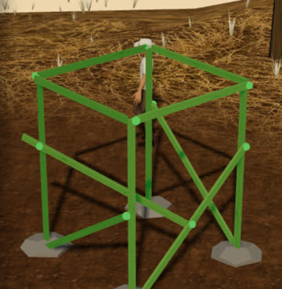
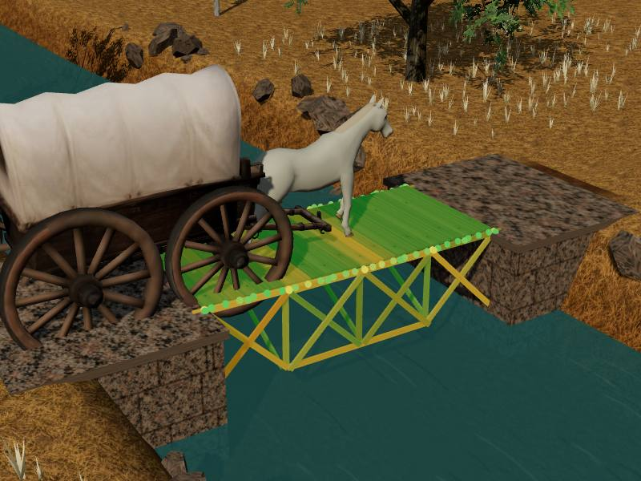
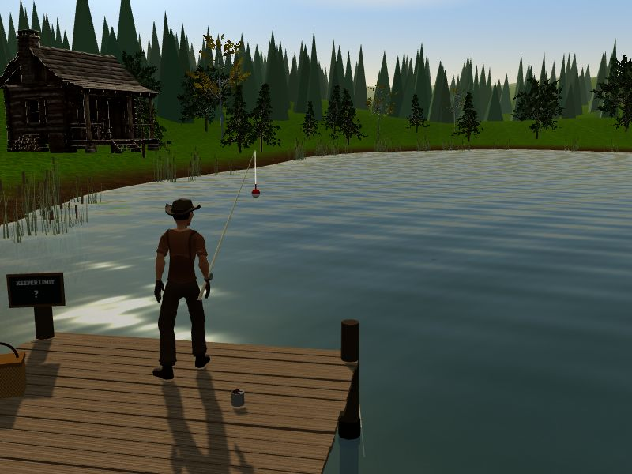
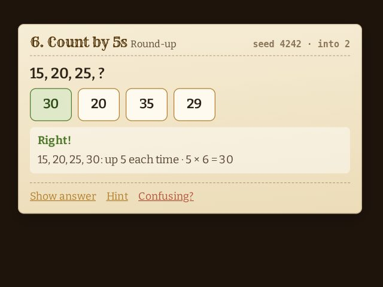
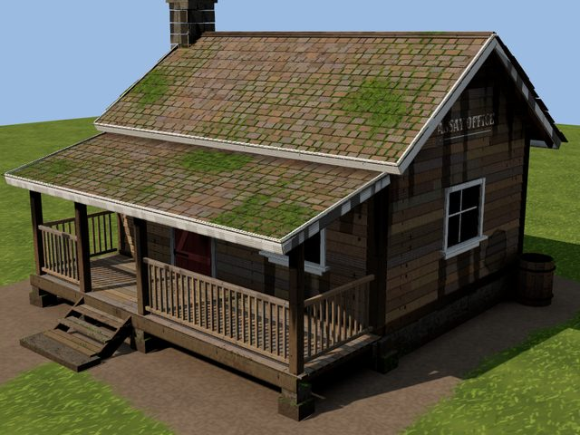
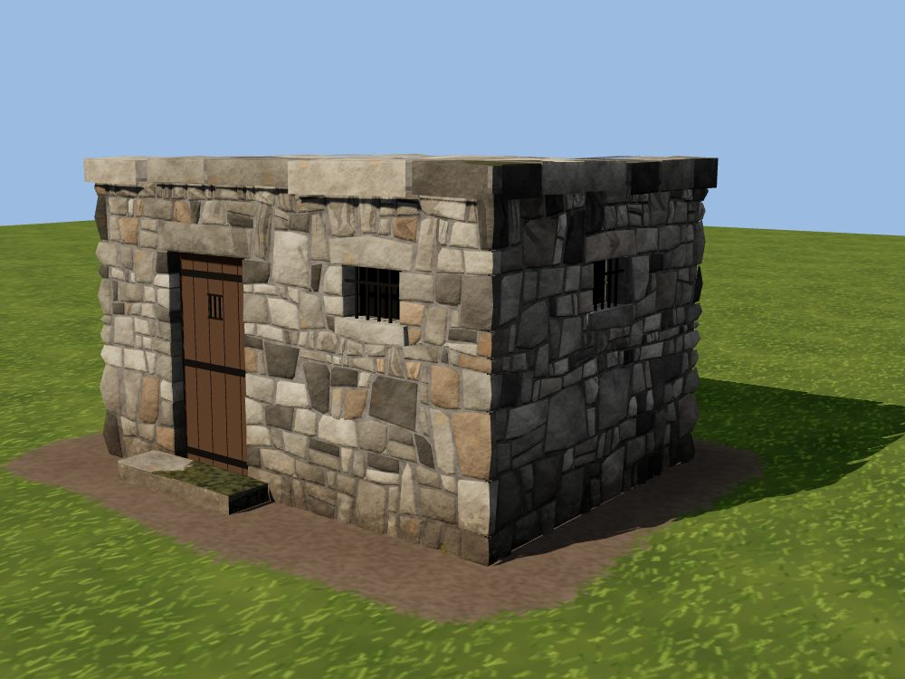
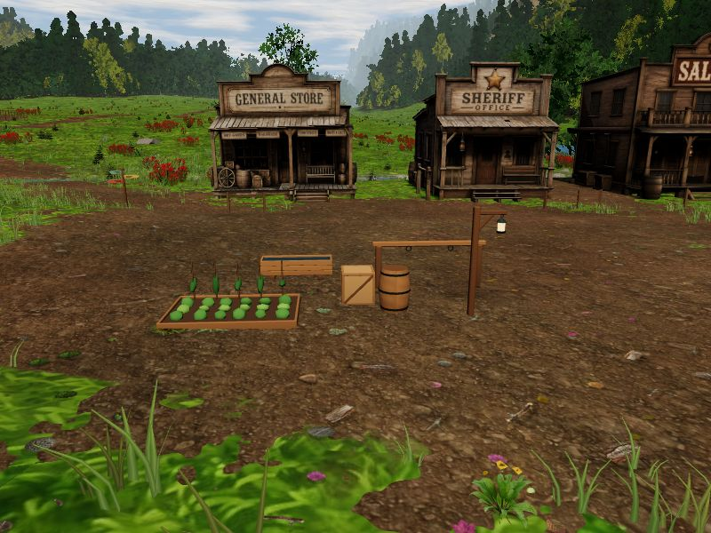

Mathwood Valley Labs
Prototypes for the game, tried out on their own before they go in. Back to Mathwood Valley.

Windmill Tower
Build a tower from a stack of lumber, then call the wind and see what stands. Right triangles, lengths and angles along the way.

Bridge
Span the river with a stack of lumber, then send a walker, a horse, wagons and a cattle drive across. Triangles, diagonals and right angles along the way.

Fishing
Cast off the dock, reel them in, keep the big ones and throw back the small ones. Fractions of a foot, adding weights and ratios along the way.

Practice
Every place's questions, level by level, with the game's own choices and reasons. No game around them: tap an answer, see why, try the next. An adaptive mode shows a rider finding their level.

Material Lab
A cabin built from parts, textures drawn in code, and moss, grime and worn edges the shader places by itself. Sliders, masks, decals, and the Tripo cabin to compare.

Stone Lab
Stone walls built stone by stone in code: odd-shaped stones in mortar, dry-stacked fieldstone, thin ledgestone. A wall, a corner, a chimney, a jail, a foundation, a field wall.

Town Lab
Decorate the town: move and turn the buildings, run fences, put down barrels, crates, troughs, lanterns and gardens, paint flowers. Save it and the game shows it.